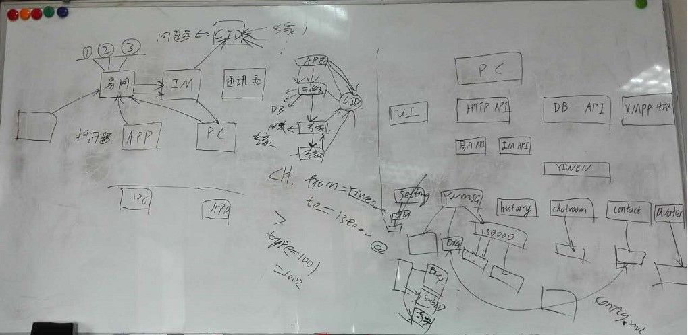

易问接口：
1，提问题。
2，短流程
3，找专家
IM信息。 每个问题生产相应的GID，发给GID对应的群组人员。转发时关联GID和专家的关系。
PC端的架构功能:
UI功能， HTTP API功能，DB API访问功能，XMPP消息流。
YWMSG：消息流信息。
Contract信息。
XMPP消息流： 业务驱动， IM协议。
13022222222@eask.teamshub.com --IM 登陆账户
m1_extend_msg@@@sitech-oncon@@@v1.0|||type=1001|||subType 用于区分。 其他拓展，IM服务器定义。
